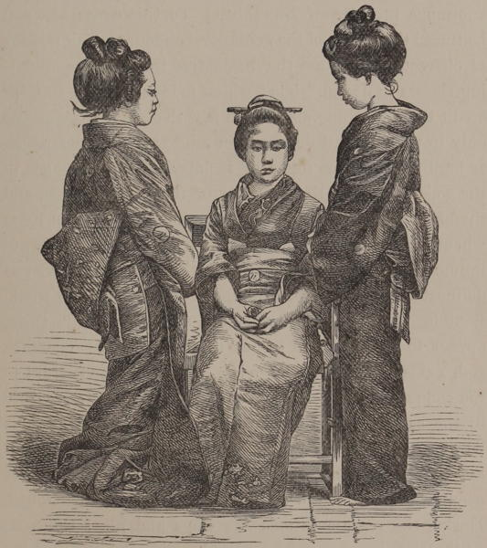

“Japanese young women”
Japan: Historical and Descriptive (1877)
The female Japanese is of prettier appearance than the male, and one sees most graceful, attractive figures amongst them. Neck, shoulders and bust are blamelessly modelled; from below the strong, prettily shaped eyebrows shine forth dark, soulful eyes, shaded over by long silk eyelashes, and these charms are the more increased by a small, finely-cut mouth with rows of ivory white teeth. The hands are very small and neat, and even the women of the lower classes show a fine structure. As a defect in beauty we may perhaps mention the smallness of figure, and their walk with the toes turned in. This walk is perhaps only the result of their wearing sandals and may get lost again in course of time, when they will be more used to wearing European shoes. If their beauty fades early—if Japanese mothers get old and ugly before their time—this is chiefly so because the Japanese children (though they begin at the age of six months to take some solid food) demand mother-milk often up to their fifth year. The Buddhist prohibition of taking animal food has prevented the development of stock-farming in Japan, and as milk nourishment is indispensable to young children, the poor mothers have to degrade themselves to a kind of human milk cows, to the permanent injury of their beauty; at the same time this keeps alive the custom of the so called “female favourite servants,” a custom which has not quite died out yet.
Japan As I Saw It (1912)
The first impression of the fair sex which the traveller receives in a Japanese crowd is in the highest degree unfavourable; the ghastly appearance of the faces and bosoms, thickly coated with powder, the absence of eyebrows, and the blackened teeth, produce a most painful and disagreeable effect. Were it not for this abominable custom, Japanese women would probably rank high among Eastern beauties, certainly far before Chinese.
Narrative of the Earl of Elgin’s Mission to China and Japan (1859)
Some of the women we saw were rather pretty, in a pink and white doll style, but their faces were covered with flour or powder, and they gaped at us with an expression of face so utterly idiotic, I cannot understand how some people admire them so much.
Letters from China & Japan (1875)
The married women of Simoda, as well as of Nangasaki and Hakodadi, are known from the single ones by their teeth. As soon as a female is married, she paints her teeth black, and her lips of the reddest vermilion. The women of Japan are of low stature, and some of them are perfect beauties. In Japan, as in China, the females are thought little of by the other sex; and they (or those of the poorer classes) perform a great deal of manual labor.
A Cruise in the U.S. Steam Frigate Mississippi (1860)
It is a mistake, I was recently told, to conclude that only married women stain their teeth; it is a fashion without uniformity of adherence.
Rambles Through Japan Without a Guide (1892)
On one occasion, I remember, we visited the house of a Yacoonin, who received us with evident pleasure, treating us to tea and cake. After some minutes’ conversation, his wife entered, accompanied by her female attendant. The officer introduced us to her, but as, unfortunately, she had not followed her husband’s example in learning English, the remarks we exchanged were, as is almost always the case when you need an interpreter, few in number. She was a good-looking young woman, thickly powdered, her eyebrows shaved entirely off, and her teeth blackened. The two last-mentioned operations are performed by every woman when she becomes a wife, and as they have generally strongly-marked eyebrows, and pretty regular teeth, with by no means small mouths, the disfiguring effect of the operations may be better imagined than described. The reason ascribed for this extraordinary practice is that each woman may show her husband that from henceforth she desires no admiration but his; though how a husband can reconcile himself to the disfigurement, I cannot think. Fancy wooing a lovely brunette, with hair like the raven’s wing, and eyebrows to correspond, whose coral lips open to disclose two rows of pearls. Then, when the vows have been uttered, and this fair being becomes your own, picture to yourself what you must think on beholding the transformation that, in obedience to the tyrant custom, she has effected—the pearls suddenly turned to ebony, and the arch formed by the eyebrow now a bluish-looking desert!
After leaving this house, the friend who had accompanied us there informed us that the Yacoonin had fallen in love with his wife at a “tea house,” and purchased her from the proprietor of the establishment.
A Lady’s Visit to Manilla and Japan (1863)
The total absence of intellect, in the expression of most of the women’s faces, is greatly accounted for by the fact of their entire want of education, and the very low rank they have been allowed to hold in the social scale. Not only have they never received the respect due to reasonable beings in this life, but their prospect of a share in any future state, has actually been denied them. This state of things is now happily being changed by an edict which places them more on a footing with their Lords and Masters. The old custom of blackening the teeth when married, is also being gradually abolished, and as the dye requires frequent application, even those who have hitherto been obliged to conform to the hideous practice, may profit by this result of advancing civilization.
A still further improvement would it be to the dark-eyed fair sex of Japan, were they forbidden the use of paint and flour, with which they cover neck and face with a most unsparing and unartistic hand! As far as we have seen they do not appear to be in the habit of wearing much jewelry, the Obé being to the women, as swords are to the men, their greatest point of extravagance. These obés are worn round the waist like a sash, but are finished at the back with a thick kind of hump, and are often made of very costly materials.
Letters from China & Japan (1875)
Although the position of woman in Japan is superior to that in other heathen lands, it is by no means an enviable one. Woman in the family occupies an entirely subordinate place. A girl is subject to her father’s wishes. There is no such thing as “coming of age” for a girl in Japan. She is all her lifetime a mere subject. When married she must obey her husband and father-in-law, and when a widow her son becomes her master. The baby-boy clings close to his mother’s side, and lays his little cheek against hers, and talks a language which she alone can understand. But as he grows up, too often he learns to despise her. There are happy exceptions to these statements, where the family-life seems pure and peaceful, and woman appears to have her rightful place.
Yet with all this fathers seem to take great care of their little daughters. The best clothing they can afford is bought for them; they send them to school and are interested in their education, paying liberally whatever is required.
The Sunrise Kingdom (1879)
To look as white as possible is evidently the ambition of the younger women, for their faces and necks are very conspicuously powdered, while the chalkiness thus produced is relieved by brilliant touches of vermilion on the lips. In all this, however, there is no attempt at concealment, and one’s criticism is thus disarmed.
The Land of the Morning (1882)
Our neighbours [at a hotel in Nikko] are nice lady-like looking girls, and are, I see, modern enough in their manners to sit down to dinner which is being brought in on pretty trays in lacquer bowls with their brothers; formerly it was not etiquette for the men and women of the family to eat together, and Japanese gentlemen of the old school are heard prophesying direful results from the present movement in favour of modifying the ‘subjection of women.’ They urge the ‘thin-edge-of-the-wedge argument;’—if you begin by allowing your wife and daughters to speak before they are spoken to, and even dine with you, how is the natural and just authority of the man to be maintained? The decrees of Heaven and of domestic legislation will alike be disregarded by the rising generation of women, encouraged in Government schools by ‘foreign devil’ teachers to assert themselves, and be as ‘hens that crow in the morning.’ Indeed, some ancient folk in Japan are ready to agree with the husband of a learned lady of the last century in Europe, that ‘A wise woman is a very foolish thing;’ and hesitate to disturb that docile and placid ignorance which they regard as ‘a very excellent thing in woman.’
Journal of a Lady’s Travels Round the World (1883)
You can see women at work on the farms almost as much as men. You will see them in the spring up to their knees in slush, planting out the young shoots of rice. If you hire a horse in the summer to carry your luggage when you are out on a tramp, it is ten to one that the horse comes in charge of a woman. It is difficult to say what field labour there is that the woman does not share with the man. From the time that she has reached her full growth to the time that she is beyond labour, she toils in the fields, especially if she is the wife or daughter of a labourer or small tenant-farmer. In the intervals of labour she will suckle a child; when there is no work for her in the fields she is at her loom, weaving some simple cotton cloth for domestic uses. When she is too old for out-door work she stays at home, does the cooking, cleans the house, mends the clothes, and prepares the water for the evening bath. You never find a Japanese country woman idle, and, in spite of their poverty, the savings banks could tell you a great deal about their thrift. In the larger farmhouses, in some districts, there is also the feeding of the silkworms,—a most engrossing occupation while it lasts,—and happy is the farmer in Shinshu or Joshu who has a houseful of women folk. The greater part of the silkworm-rearing falls on the women, as does the tea-picking in other parts of the country.
Every-day Japan (1909)
◀ FamiliesChildren ▶